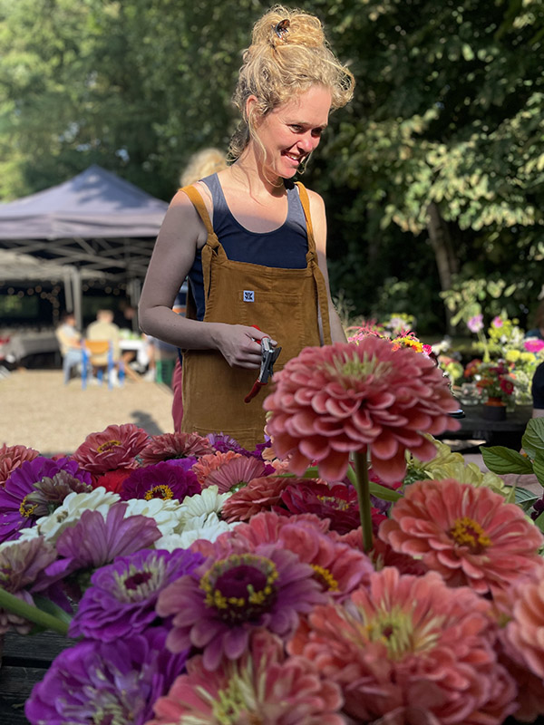
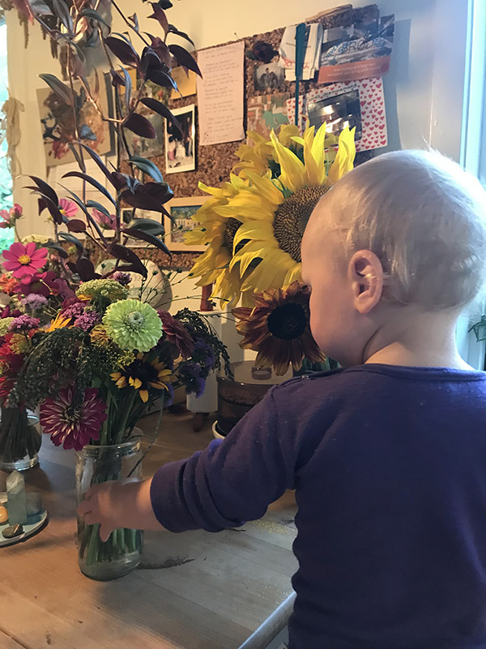
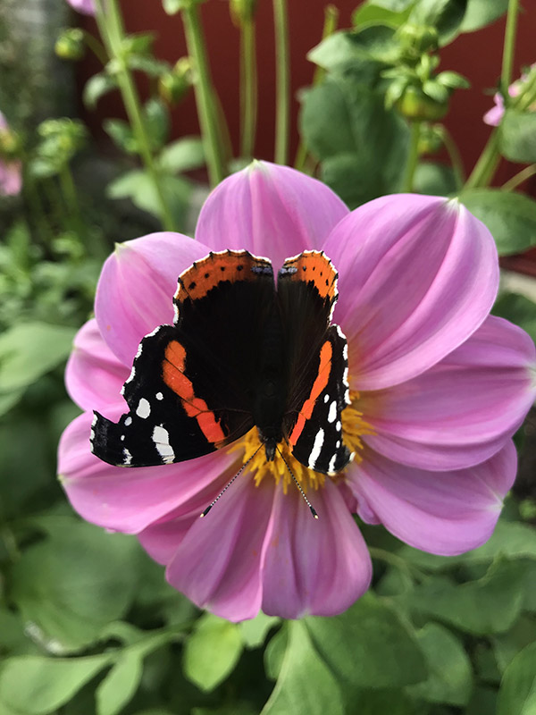
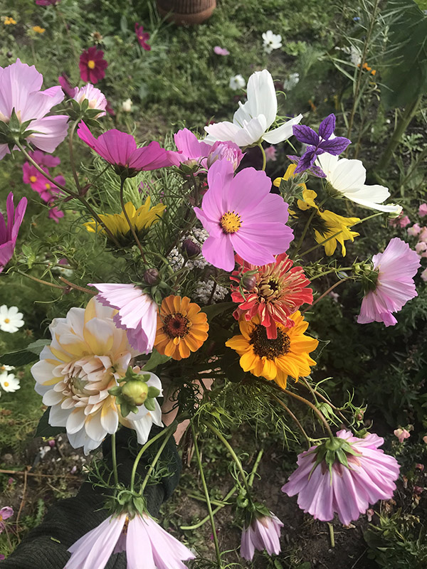

Hej, mit navn er Sara Jensen, og jeg er 28 år gammel. Jeg er uddannet
økologisk landmand i Norge og derudover har jeg en uddannelse inden for permakultur. Der har man
fokus på bæredygtig produktion og læren om alle spiselige afgrøder og planter. Her bruger man
vedvarende ressourcer som sollys, regn og vind samt planter og dyr. Det betyder også, at jeg så
vidt muligt undgår at bruge fossilt brændsel, for eksempel, ved ikke at transportere planterne.
Jeg elsker at arbejde med naturen

Fyn er fin
Jeg er bosat på Fyn med min mand og min søn, hvor jeg driver min lille
virksomhed ‘Markblomst’. Jeg
startede min virksomhed i foråret 2021, da jeg har en stor interesse indenfor bæredygtighed og
økologi,
og brænder for at gøre en forskel. Derfor er mit motto;
Jeg gør det for jorden, livet og fremtiden

Jeg gør det for biodiversiteten
Jeg dyrker regenerativt, gravfridyrkning og økologisk, hvilket er med til
at
fremme biodiversiteten og økosystemet med mikroorganismer der ligger i jorden, samt mindske Co2
forbruget ved minimal jordbearbejdning. Desuden lader jeg ⅓ af blomsterne stå uhøstet, hvilket
er
godt for
biodiversiteten, dyrene og alle insekterne i området, da de ikke pludseligt mister deres
næringskilde.
Insekterne er vigtige at beholde, da de er med til at give næring til blomsterne.

Når høsten er klar
Når jeg har høstet blomsterne, sælger jeg dem på Svendborg torv hver
lørdag over sommeren og
på andre markeder rundt omkring fyn. Det har været et stort hit, og det er sjældent der er nogen
buketter tilbage sidst på dagen, hvilket er dejligt, da der på den måde stort set ikke er noget
spild.
De få buketter eller stilke der ikke bliver solgt, har jeg derefter tørret og
brugt til te, sæbe, eller andre sjove ting.
